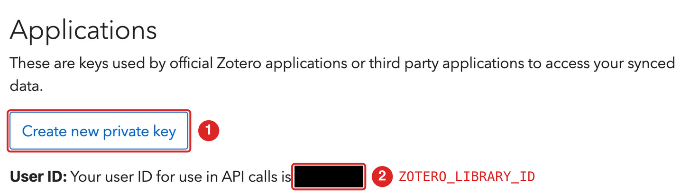
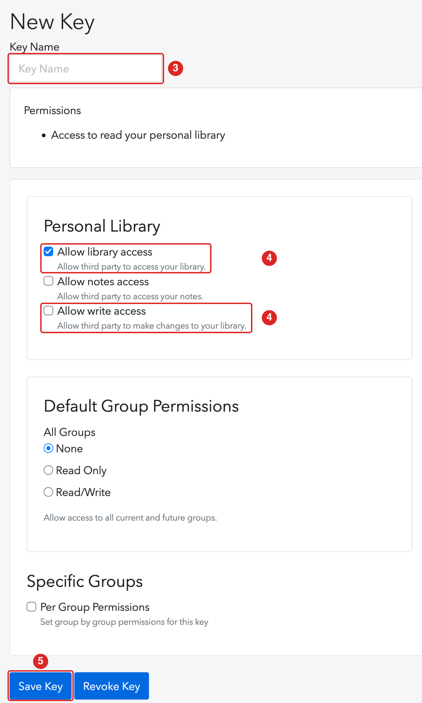

citezot::cz_set_auth()citezot のセットアップ
これは最初に一度だけ行うセットアップです。所要時間は 5 分ほどで、プロジェクトごとにやり直す必要はありません。次のことを行います。
- Zotero の API キーを作成する
- キーと Zotero のユーザー ID を R に教える
- 引用したい項目すべてに引用キーがあることを確認する
このガイドのコードは、Zotero のアカウントが必要なため、サイトのビルド時には実行されません。
1. API キーを作成する
citezot は Zotero Web API と通信するため、API キーが必要です。Zotero デスクトップを起動しておく必要はありませんが、ライブラリが zotero.org と同期されている必要があります（Zotero デスクトップの設定→同期）。
- https://www.zotero.org/settings/keys にサインインし、Create new private key を選びます。
- 数字のユーザー ID を控えます。同じページの「Your user ID for use in API calls is …」という文に表示されています（ユーザー名ではありません）。

- わかりやすい名前を付けます（例:
citezot-key）。 - Personal library の下で、Allow library access（「Allow third party to access your library」）にチェックを入れます。citezot を使うには必須です。citezot で Zotero の文献を読み取るだけでなく編集もしたい場合は、Allow write access（「Allow third party to make changes to your library」）にもチェックを入れます（後述）。
- キーを保存し、今すぐコピーしてください。Zotero がキーを表示するのは一度だけです。

読み取り専用か、書き込み権限か
cz_update_bib()、cz_find()、cz_get_item()、cz_fetch_items() には、読み取り専用のキーで足ります。ライブラリを変更する関数（cz_add()、cz_update_item()、cz_pin_key()）だけが Allow write access を必要とします。これらの関数は dry_run = FALSE を渡さない限りドライランで、citezot には削除機能もありませんが、読み取り専用のキーは何が起きてもライブラリを変更できないため、技術的にはより安全です。書き込み権限は、あとで同じページからキーを編集して追加できます。
グループライブラリ
グループライブラリの場合は、同じページの Group permissions でキーを作成します。グループ ID は、グループの URL（https://www.zotero.org/groups/<ID>/<name>）に含まれる数字です。そのうえで、ZOTERO_LIBRARY_ID（下記）にそのグループ ID を設定し、cz_auth(library_type = "group") を使います。
2. キーを R に教える
citezot は次の環境変数を読み取ります。
| 変数 | 内容 |
|---|---|
ZOTERO_API_KEY |
API キー |
ZOTERO_LIBRARY_ID |
個人ライブラリ（ユーザー ID）またはグループライブラリの数字の ID |
これらはユーザーレベルの .Renviron に保存してください。すべてのプロジェクトで使え、誤ってコミットしてしまうこともありません。cz_set_auth() を使えば、これを自動で行えます。ID とキーを尋ねられ（コマンド履歴に残りません）、ファイルに書き込み、現在のセッションですぐに使えるようになります。
自分でファイルを編集したい場合は、usethis::edit_r_environ() を実行して下の 2 行を追加し、保存してから R を再起動してください（.Renviron は起動時にしか読み込まれません）。
ZOTERO_API_KEY=xxxxxxxxxxxxxxxxxxxxxxxx
ZOTERO_LIBRARY_ID=1234567どちらの方法でも、citezot が認証情報を認識できているか確認します。キーが表示されることはありません。
library(citezot)
cz_auth()
#> <cz_auth> user library 1234567 (API key hidden)キーをプロジェクト内のファイルに書かないでください。どうしても書く場合は、そのファイルを .gitignore に入れてください。
citezot はキーをどう扱うか
- キーは
api.zotero.orgにのみ、ベアラートークンとして送信します。 - キーを表示、記録、保存することはありません。認証オブジェクトを
print()してもキーは隠されます。 - 任意のキャッシュ（
cz_clear_cache()を参照）に保存されるのは書誌情報のみで、キーは含まれません。
3. 項目に引用キーがあることを確認する
citezot は、項目に保存された引用キーで項目を引用します。キーのない項目は引用できず、cz_update_bib() は見つからなかったキーを知らせます。
項目にキーを付ける方法は 2 つあります。
Better BibTeX を使う（推奨）
Better BibTeX は、選んだ書式からキーを生成し、キーを固定して変わらないようにできます。固定されたキーは項目に保存され、citezot が読み取るのはそれです。Zotero デスクトップで項目を選択し、右クリックして Better BibTeX→Pin BibTeX key を選びます。その後同期すると、キーがアップロードされます。
Better BibTeX は必須ではありません。citezot がキーを読み取るのに必要ありません。
Better BibTeX を使わない
Zotero は、各項目の Citation Key フィールドにキーを保存します。Zotero で手動で設定することも、R から設定することもできます。
cz_find("darwin origin of species") # 項目を探す
cz_pin_key("Darwin1859", "Darwin1859") # プレビュー。item には cz_find() が解釈できる識別子を指定できます
cz_add("10.1016/0022-5193(64)90038-4", key = "auto") # または、生成したキーで新しい項目を追加する新しいキーの生成方法を含む一連の流れは、論文執筆ガイドを参照してください。
トラブルシューティング
-
「Zotero credentials not found.」 この R セッションで環境変数が設定されていません。
Sys.getenv("ZOTERO_API_KEY") != ""を確認し、.Renvironを編集したら R を再起動してください。 - HTTP 403。 キーが無効か、要求した権限がありません（たとえば、読み取り専用キーで項目を追加しようとした場合）。
- 存在するライブラリなのに HTTP 404。 ユーザー ID が間違っています。ユーザー名ではなく数字を使ってください。
- Zotero デスクトップで追加したばかりの項目が見つからない。 ライブラリがまだ同期されていません。